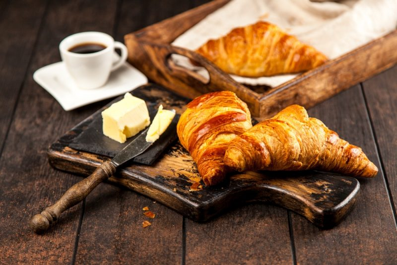

Булочка в форме полумесяца или как испечь настоящий круассан

Секреты приготовления настоящих французских круассанов
Задумывались ли вы когда-нибудь о том, как хорошо выпить чашечку ароматного кофе с хрустящим круассаном и видом на Эйфелеву башню?
В переводе с французского круассан означает «полумесяц». Классический круассан готовят без начинки и традиционно подают к завтраку.

Круассаны к завтраку
Если в ближайшее время, в вашем графике нет поездки в Париж, то создайте атмосферу романтического города прямо у себя дома. А для этого используйте 8 советов для приготовления идеальных круассанов:
- Особенности теста. Для круассанов используется только дрожжевое слоеное тесто. Технология приготовления довольно сложна, однако, его можно найти в любом крупном супермаркете. Если вы решили приготовить его самостоятельно, будьте готовы выделить несколько часов для этого процесса. Ингредиенты должны быть высокого качества и первой свежести. В идеале соотношение теста и масла должно быть 1:1.
- Замешивать тесто не следует слишком долго и активно. При контакте с кислородом оно перестает быть воздушным и эластичным. По мнению французских пекарей, идеальная температура для замешивания 16°С.
- Добавляйте качественное сливочное масло. Круассаны совсем не диетическое блюдо, но именно из-за правильного соотношения всех ингредиентов получается эта хрустящая, тающая текстура. Жирность масла должна начинаться от 85% и выше, а в составе не должны присутствовать посторонние добавки.
- Просейте муку несколько раз. Чтобы тесто получилось максимально воздушным, проведите процедуру несколько раз и проследите за однородной консистенцией выбранной муки.
- Правильный угол. Чтобы вкус и текстура булочек получилась в точности, как у французских пекарей, регулярно переворачивайте тесто при раскатке на 90°С. Это нужно для лучшего смешивания ингредиентов и той самой воздушности.
- Идеальная консистенция. Чтобы готовить правильное слоеное тесто консистенция масла не может быть слишком жидкой. Масло оставьте при комнатной температуре пока оно не станет мягким, но при этом сохранить консистенцию.
- Перед выпеканием обязательно смажьте поверхность булочек яичным желтком. Для этого удобнее всего использовать специальную кондитерскую кисточку. С помощью этого приема мы сделаем круассаны румяными и хрустящими.

- Экспериментируйте с начинкой. Французы любят круассаны с моцареллой, вялеными томатами и базиликом. Сладкие булочки с шоколадом или фруктовым джемом — отличный вариант завтрака для сладкоежки. Освойте классический рецепт и смело радуйте себя и близких новыми идеями начинок французских булочек.

Рецепт идеального хрустящего круассана:
Ингредиенты:
- Пшеничная мука — 500 г
- Свежие дрожжи — 20 г
- Соль — 10 г + щепотка
- Сахар — 50 г
- Яйца — 2 шт.
- Холодное молоко (3,2%-жирности) — 125 г
- Вода — 125 г
- Сливочное масло (не менее 82%-жирности) — 200 г
Способ приготовления:
- Просейте муку 2-3 раза и добавьте сухие дрожжи. Аккуратно втирайте их в муку кончиками пальцев в течении пары минут. Затем всыпьте соль и сахар.
- В отдельной пиале смешайте 1 яйцо, молоко и воду, слегка подогретые. Хорошо перемешайте.
- Соедините мучную и молочную смесь. Выложите тесто на рабочую поверхность и аккуратно вымешивайте в течении 5 минут.
- Сформируйте из теста небольшой шар и с помощью острого ножа сделайте несколько надрезов.
- На дно большой миски распределите тонкий слой муки и отправьте туда тесто. Закройте миску пищевой пленкой и отправьте в холодильник на ночь.
- Рабочую поверхность присыпьте мукой и выложите туда тесто. Раскатывайте тесто, периодически переворачивая на 90°С.

Коврик для теста Roll-up Joseph Joseph
- Сливочное масло оберните пищевой пленкой и аккуратно раскатайте до прямоугольной плоской формы. Выложите поверх теста и закройте свободными концами. Раскатайте до однородной равномерной толщины.

- Сложите тесто 3 раза, загибая одну сторону от себя, а другую к себе. Накройте пищевой пленкой и отправляйте в холодильник на пол часа.
- Выложите тесто на рабочую поверхность. Раскатайте и снова отправляйте в холодильник. Повторите процедуру еще 2 раза.
- В пиале взбейте яйцо до однородности с помощью вилки или венчика. Раскатайте тесто на поверхности и разделите на треугольники.
- «Закатайте» круассаны и выложите на противень, смазанный маслом. Сбрызните яйцом. Отправьте в теплое место на 2 часа, чтобы круассаны настоялись.
- Разогрейте духовку до 220°С. Перед выпеканием еще раз смажьте булочки яйцом. Выпекайте 15-20 минут до золотистой корочки.
- Остудите и подавайте к столу французский завтрак.
Приятного аппетита!
Ну а здесь вы сможете посмотреть историю возникновения круассанов.
Радуйте себя и своих близих!)